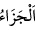
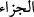
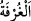

sabretmelerinden dolayı “cennetin en yüksek makamı verilecek”
“
” ihtiyaç duymama ve yeterli olma demektir. Yine “
” hayır ise hayır, şer ise
şer yeterli karşılık vermektir.
“
” konakların yüksek katına ve her yüksek binâya denir. Buna göre âyette onlar
cennetlerin en yüksek menzilleriyle mükâfatlandırılacaklardır, demektir. Bu kelime cins
isim olup “Onlar yüksek cennet odalarında huzûr ve emniyet içindedirler” (Sebe,
34/37) âyetindeki gibi çoğul kasdedilmiştir.
Abdülvehhâb’ın Fusûl’ünde der ki: “Bunlar biri gümüş, biri altın, biri inci, biri
mercan olan dört ayak üzere bina edilmiş köşklerdir.”
Âyette sabır, herhangi bir şeyle sınırlandırılmamış, sabredilen herşeyi içine alması
için mutlak kullanılmıştır. Oruç da sabra dâhildir. Rasûlullah (s.a.): “Oruç, sabrın
yarısıdır; sabır da îmânın yarısıdır.”[265] buyurmuştur. Böylece oruç, îmânın dörtte biri
olmaktadır. Oruç, Allah’ın düşmanını kahr eder. Çünkü şeytanın vesile ve vâsıtası
şehvetlerdir. Şehvetler ise yeme ve içme ile kuvvet kazanır. Bu yüden Hz. Peygamber
(a.s.) şöyle buyurmuştur: “Şeytan, Âdemoğlunun bedeninde kanın dolaştığı gibi
dolaşır. Onun yollarını açlıkla tıkayın.”[266]
Açlık, muhabbet ehlinin gıdasıdır;
Hevâsına uyan insanlar için ise sıkıntı ve belâ
Açlık, gönül evini nurlandırır;
Yeme içme ise çamurdan olan bedeni tâmir eder
Gönül evini nursuz bırakırsan,
Çamurdan olan vücûdu mamur etsen ne olacak?
Yine bir hadîste şöyle buyrulmuştur: “Cennette hava üzerinde bina edilmiş yüksek
evler vardır. Onların üstte bir bağlantıları olmadığı gibi, alttan da direkleri yoktur.
Bu yüksek evlerin sâkinleri buralara kuşlar gibi gelirler. Bu evlere ancak belâ ve
musîbetlere sabredenler nâil olur.”[267]
et-Te’vîlâtü’n-Necmiyye’de der ki: “İşte onlara,” bidâyette emirleri yerine getirmek
ve yasakları terk etmek, yolun ortasında kötü ahlâkı güzel ahlâkla değiştirmek, nihâyette
insânî varlığı Rabbânî varlıkta fânî kılmak sûretiyle “sabretmelerine karşılık cennetin
en yüksek makamı” güçlü ve muktedir bir melikîn katında sıdk koltuğunda indiyyet
(Allah’ın huzûrunda olma) makamı “verilecek”
Sabır, belâ ve musîbetten duyulan elem ve acıyı Allah’tan başkasına da Allah’a da
şikâyet etmemektir. Bazı büyükler der ki: Allah Teâlâ’yı bilip tanıyan ârifin
edeblerinden birisi de, kendisine bir acı isâbet ettiği zaman Eyyûb (a.s)’ın Allah’a
mürâcaat etmesi Allah’a karşı edebi koruyarak ve acziyetini ızhâr ederek şikâyetini
sadece Allah’a yapmasıdır. Allah’ı bilip tanımayan, bununla birlikte kendisini teslim ve
tefvîz ehli olup îtiraz etmeyen kimselerden zanneden, böylece iki cehâleti kendilerinde